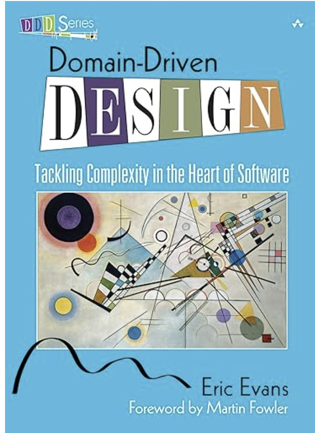
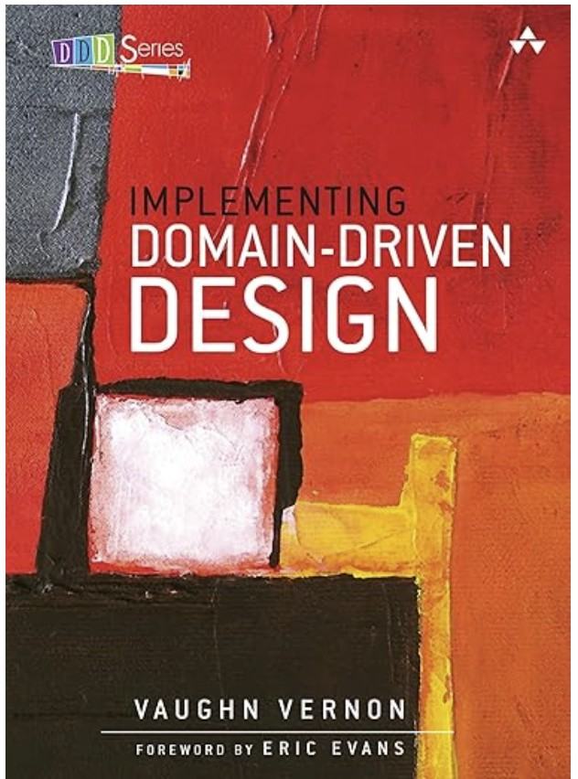

DomainDrivenDesign¶
Nella ‘battaglia’ tra Processi BottomUp e TopDown nello sviluppo del software,
sembra che in molti ambiti applicativi stia .
| 
ISBN-13 : 978-0321125217 |

ISBN-13 : 978-0321834577 |
{kind=link}
{kind=link}
Vorrei un quandro di riferimento al Domain Driven Design e a come questo paradigmi viene oggi usato per la progettazione e costruzione di sistemi software basati su microservizi
Il Domain-Driven Design (DDD) è un approccio alla progettazione e costruzione di software che pone l’enfasi sulla comprensione profonda del dominio di business. Non è una tecnologia o un framework, ma una filosofia e un insieme di principi e pattern che aiutano gli sviluppatori a creare software che rifletta accuratamente la complessità del mondo reale che intende servire.
Quadro di Riferimento del Domain-Driven Design (DDD)¶
Il DDD opera su due livelli principali:
Strategic Design (Progettazione Strategica)¶
Si concentra sulla visione d’insieme del dominio e su come suddividerlo in aree gestibili. Gli elementi chiave includono:
Dominio: Il campo di conoscenza e attività su cui il software opera. È il problema di business che il software deve risolvere.
Modello (Domain Model): Un sistema di astrazioni che descrive specifici aspetti del dominio. È il cuore del DDD e serve come blueprint per il software.
Linguaggio Ubiquo (Ubiquitous Language): Un linguaggio comune e condiviso tra sviluppatori ed esperti di dominio. È fondamentale per evitare ambiguità e incomprensioni e viene utilizzato sia nelle discussioni che nel codice.
Contesto Delimitato (Bounded Context): Un confine logico e coerente all’interno del quale un modello di dominio specifico ha un significato ben definito e non ambiguo. Al di fuori di questo contesto, i termini potrebbero avere significati diversi. I Bounded Contexts aiutano a gestire la complessità suddividendo un dominio ampio in parti più piccole e gestibili.
Mappa di Contesto (Context Map): Una rappresentazione visiva delle relazioni e delle interazioni tra i diversi Contesti Delimitati. Aiuta a comprendere come le diverse parti del sistema comunicano e dipendono l’una dall’altra.
Tactical Design (Progettazione Tattica)¶
Fornisce strumenti e pattern pratici per tradurre la comprensione del dominio in codice. Gli elementi chiave includono:
Entità (Entities): Oggetti che hanno un’identità persistente e un ciclo di vita nel dominio, indipendentemente dai loro attributi. Ad esempio, un “Cliente” o un “Ordine”.
Value Objects: Oggetti che non hanno un’identità propria, ma sono definiti unicamente dai loro attributi. Sono immutabili. Ad esempio, un “Indirizzo” o un “Intervallo di Date”.
Aggregati (Aggregates): Un cluster di oggetti (Entità e Value Objects) che vengono trattati come un’unica unità per la consistenza dei dati. C’è una “Radice dell’Aggregato” (Aggregate Root) che è l’unica Entità a cui si può accedere dall’esterno dell’Aggregato. Questo garantisce che le regole di business siano rispettate. Ad esempio, un “Ordine” con le sue “Voci d’Ordine” potrebbe essere un Aggregato.
Servizi di Dominio (Domain Services): Operazioni o comportamenti che non appartengono naturalmente a nessuna Entità o Value Object specifica, ma che rappresentano una logica di business importante che coinvolge più oggetti di dominio.
Repository: Meccanismi che astraggono il modo in cui gli Aggregati vengono recuperati e salvati nella persistenza. Permettono al dominio di non preoccuparsi dei dettagli tecnici di accesso ai dati.
Eventi di Dominio (Domain Events): Un qualcosa che è accaduto nel dominio e che gli esperti di dominio considerano significativo. Gli eventi di dominio vengono utilizzati per notificare ad altre parti del sistema (all’interno dello stesso Contesto Delimitato o in contesti diversi) che qualcosa di importante è successo, permettendo la reazione a tali eventi.
DDD e Microservizi¶
Il Domain-Driven Design e l’architettura a Microservizi sono due paradigmi che si completano a vicenda in modo potente, sebbene il DDD non sia esclusivo dei microservizi e possa essere applicato anche a monolitici. L’allineamento tra DDD e microservizi è quasi naturale, in quanto entrambi promuovono la scomposizione di sistemi complessi in parti più piccole e gestibili.
Ecco come il DDD viene usato nella progettazione e costruzione di sistemi software basati su microservizi:
Definizione dei Confini dei Microservizi tramite i Contesti Delimitati:¶
Principio: Il concetto di Contesto Delimitato (Bounded Context) è il pilastro fondamentale per la scomposizione di un’architettura monolitica in microservizi.
Applicazione: Ogni microservizio idealmente incapsula un singolo Contesto Delimitato. Questo significa che ogni microservizio ha il suo modello di dominio interno, il suo linguaggio ubiquo e la sua logica di business specifica e coerente. Questa corrispondenza assicura che ogni microservizio abbia un ambito ben definito e una responsabilità chiara.
Benefici: Riduce la complessità, minimizza le dipendenze tra i servizi, permette a team indipendenti di lavorare su microservizi diversi senza interferenze eccessive e facilita lo sviluppo, il deployment e lo scaling indipendenti.
Linguaggio Ubiquo e Chiarezza della Comunicazione:¶
Principio: Mantenere un linguaggio comune e coerente.
Applicazione: All’interno di ogni microservizio (che corrisponde a un Bounded Context), il linguaggio ubiquo è strettamente applicato. Questo garantisce che tutti nel team (sviluppatori, tester, esperti di dominio) utilizzino la stessa terminologia e comprendano i concetti nello stesso modo.
Benefici: Previene ambiguità, riduce la confusione e migliora l’efficienza della comunicazione e dello sviluppo.
Aggregati come Unità di Consistenza e Confinamento dei Dati:¶
Principio: Gli Aggregati sono unità per la manipolazione dei dati e la gestione della consistenza.
Applicazione: All’interno di un microservizio, gli Aggregati sono fondamentali per mantenere la consistenza transazionale e l’integrità dei dati. Ogni microservizio possiede i dati relativi ai suoi Aggregati, spesso con un proprio database. Le operazioni di modifica su un Aggregato avvengono come un’unica transazione atomica.
Benefici: Promuove l’autonomia dei dati per ogni microservizio, riducendo la necessità di transazioni distribuite complesse e migliorando la resilienza.
Eventi di Dominio per la Comunicazione tra Microservizi (Consistenza Finale)¶
Principio: Gli Eventi di Dominio rappresentano fatti significativi accaduti nel dominio.
Applicazione: Quando un Aggregato all’interno di un microservizio cambia stato (e questo è un evento di dominio), il microservizio può pubblicare un Evento di Integrazione (che è un tipo specifico di Evento di Dominio, ma destinato alla comunicazione tra contesti). Altri microservizi interessati possono sottoscrivere questi eventi e reagire di conseguenza.
Benefici: Favorisce la coesione all’interno del microservizio e il disaccoppiamento tra microservizi, promuovendo la consistenza finale (eventual consistency). Questo è cruciale in un’architettura distribuita, dove le transazioni atomiche attraverso più servizi sono complesse e sconsigliate. Event Storming è una tecnica DDD utile per identificare questi eventi.
Mappe di Contesto per Gestire le Relazioni tra Microservizi:¶
Principio: Comprendere e visualizzare le relazioni tra i Contesti Delimitati.
Applicazione: Una Context Map diventa essenziale per documentare e gestire le interazioni e le dipendenze tra i diversi microservizi. Aiuta a identificare pattern di integrazione (es. Partner, Customer/Supplier, Anti-Corruption Layer, Shared Kernel) e a capire come i cambiamenti in un microservizio possano influenzare gli altri.
Benefici: Migliora la comprensione dell’architettura complessiva, facilita la collaborazione tra i team che sviluppano diversi microservizi e aiuta a prevenire integrazioni caotiche.
In sintesi, il DDD fornisce la metodologia per definire i confini logici dei microservizi, mentre l’architettura a microservizi fornisce l’implementazione fisica di questi confini. Il DDD aiuta a garantire che i microservizi siano allineati ai requisiti di business, siano coesi internamente e disaccoppiati esternamente, portando a sistemi software più manutenibili, scalabili e facili da evolvere.
Modellazione del dominio¶
Vorrei capire come posso costruire un modello del dominio, inteso come cuore di un approccio Domain Driven Design alla costruzioe di un sistema software, quando i componenti del sistema sono microservizi. Mi pare che l’uso di UML non sia adeguato
Hai assolutamente ragione a mettere in discussione il ruolo tradizionale di UML nell’applicazione del Domain-Driven Design (DDD) a un’architettura di microservizi. Sebbene UML possa ancora essere utile per la progettazione di basso livello all’interno di un singolo microservizio, spesso risulta inadeguato quando si cerca di modellare il dominio nel suo complesso attraverso confini distribuiti. Il cuore di un approccio DDD, soprattutto con i microservizi, non sta nei rigidi diagrammi di classe per l’intero sistema, ma nella comprensione e nella definizione chiara dei contesti delimitati e delle loro interazioni.
Ecco come creare un modello di dominio in un contesto di microservizi, passando dal tradizionale UML a tecniche più efficaci, collaborative e comunicative:
1. Concentrarsi sui contesti delimitati, non su un singolo modello unificato¶
Il più grande cambiamento di paradigma è riconoscere che con i microservizi non esiste un unico modello di dominio unificato per l’intero sistema. Invece, il dominio viene scomposto in più modelli più piccoli e coerenti, ciascuno residente nel proprio contesto delimitato .
Contesto Limitato: questo è il concetto centrale. Definisce un confine entro il quale un particolare modello di dominio è coerente e applicabile. Al di fuori di questo confine, termini e concetti potrebbero avere significati diversi. Ogni microservizio (o un piccolo gruppo coeso di microservizi) dovrebbe idealmente corrispondere a un singolo Contesto Limitato.
Esempio: un “Prodotto” nel CatalogContesto Limitato potrebbe avere attributi come name, description, SKU. Lo stesso “Prodotto” nel Order FulfillmentContesto Limitato potrebbe interessare solo SKU, quantity, e delivery_status. Sono modelli diversi della stessa entità del mondo reale, coerenti solo all’interno dei propri confini.
2. Enfatizzare la comunicazione e la collaborazione (comprensione condivisa)¶
Poiché il “modello” è ora distribuito, la vera sfida diventa mantenere una comprensione condivisa tra i team. È qui che l’enfasi si sposta dai diagrammi formali a tecniche collaborative ed espressive.
Linguaggio onnipresente: questo rimane fondamentale. Per ogni Bounded Context, definire esplicitamente e utilizzare in modo coerente un linguaggio concordato sia dagli esperti del settore che dagli sviluppatori. Questo linguaggio dovrebbe riflettersi direttamente nel codice (nomi delle classi, nomi dei metodi, nomi delle variabili).
Mappatura del contesto: è fondamentale per visualizzare le relazioni tra diversi contesti delimitati. Mostra come interagiscono, quali contesti dipendono da altri e quali modelli di comunicazione vengono utilizzati.
Tecniche per la mappatura del contesto:
Disegnare sulle lavagne interattive: semplice, veloce e collaborativo.
Miro/Whimsical/Excalidraw: strumenti di lavagna collaborativa online.
Modello C4: sebbene non sia strettamente riservato a DDD, l’attenzione rivolta alle visualizzazioni di contesto, contenitore, componente e codice può essere adattata per mostrare i Bounded Context come “sistemi” o “contenitori” e le relative relazioni.
3. Tecniche di modellazione all’interno di un contesto delimitato¶
Per il funzionamento interno di un singolo microservizio (ad esempio all’interno di un Bounded Context), i tradizionali blocchi di costruzione DDD sono ancora molto rilevanti e possono essere modellati in modo efficace senza un UML pesante.
Event Storming: questa è probabilmente la tecnica più potente per avviare un processo DDD in un contesto di microservizi.
Come funziona: un workshop collaborativo (fisico o virtuale) che coinvolge esperti del settore e sviluppatori. I post-it vengono utilizzati per identificare:
Eventi di dominio (arancione): qualcosa di significativo accaduto in passato (ad esempio, OrderPlaced, PaymentReceived).
Comandi (blu): intenzione di fare qualcosa (ad esempio, PlaceOrder, ProcessPayment).
Aggregati (giallo): cluster di oggetti trattati come un’unica unità per le modifiche dei dati, garantendo la coerenza transazionale (ad esempio, Order, Customer).
Leggi modelli/proiezioni (verde): dati ottimizzati per le query.
Politiche (Rosa): Reazioni agli eventi.
Vantaggioc per i microservizi: l’Event Storming rivela in modo naturale i confini dei servizi (spesso incentrati su aggregati o gruppi di eventi/comandi correlati), i flussi di eventi tra i servizi e identifica i contesti delimitati .
Aggregati e radici degli aggregati: definisci chiari confini transazionali. La radice degli aggregati è l’unico punto di ingresso per le interazioni esterne. Questo informa direttamente l’API pubblica del tuo microservizio.
Entità e oggetti valore: utilizzali per modellare i componenti all’interno di un aggregato.
Eventi di dominio: modellano in modo esplicito gli eventi significativi. Questi diventano il mezzo principale di comunicazione asincrona tra i microservizi.
Collaborazioni tra servizi: concentrarsi sul modo in cui interagiscono i servizi (chiamate API sincrone, messaggistica di eventi asincroni) anziché solo sulle classi esistenti.
4. Andare oltre UML per la progettazione a livello di sistema¶
Invece di UML per il livello macro:
Mappe di contesto: rappresentano visivamente i contesti delimitati e le loro relazioni (ad esempio, Cliente-Fornitore, Conformista, Livello anticorruzione, Kernel condiviso). In questo modo si evidenziano dipendenze e strategie di integrazione.
Diagrammi di flusso degli eventi: illustrano la sequenza degli eventi e come si propagano tra i servizi. Questo è fondamentale per comprendere i flussi di lavoro distribuiti e la coerenza finale.
Specifiche API: utilizzare OpenAPI/Swagger (per REST) o Protobuf (per gRPC) per definire rigorosamente i contratti dell’API pubblica di ciascun microservizio. Si tratta di una documentazione eseguibile del modello di dominio esposto dal servizio.
Architecture Decision Records (ADR): Documentare le decisioni architetturali significative, in particolare in merito ai confini dei servizi, ai modelli di comunicazione e ai modelli di coerenza dei dati. Ciò contribuisce a mantenere il contesto e la coerenza nel tempo.
5. Raffinamento iterativo e progettazione evolutiva¶
La modellazione del dominio nei microservizi è raramente un’attività di “grande progettazione iniziale”. È iterativa.
Inizia dalle cose semplici: comincia con una conoscenza approfondita del dominio principale.
Evoluzione dei confini: man mano che si implementa e si impara, si potrebbe scoprire che i confini del servizio devono essere modificati. DDD incoraggia questo refactoring.
Sviluppo basato sui test (TDD) e sviluppo basato sul comportamento (BDD): queste pratiche aiutano a consolidare l’Ubiquitous Language e a garantire che il codice rifletta accuratamente il comportamento del dominio, perfezionando implicitamente il modello.
In sintesi, per i microservizi con DDD:
Abbandonate il modello di dominio monolitico. Abbracciate più contesti delimitati .
Dare priorità alla comprensione condivisa attraverso la mappatura del linguaggio e del contesto onnipresenti .
Utilizzare Event Storming come potente strumento collaborativo per scoprire eventi di dominio, comandi e potenziali limiti di servizio.
Modella all’interno di ciascun contesto delimitato utilizzando elementi costitutivi DDD quali aggregati, entità e oggetti valore.
Sostituire l’UML a livello di sistema con diagrammi di flusso degli eventi e specifiche API rigorose .
Questo approccio consente di rappresentare accuratamente il modello di dominio, di evolversi insieme all’azienda e di supportare lo sviluppo e l’implementazione indipendenti propri di un’architettura di microservizi.
Questo cambiamento di prospettiva da un modello singolo e unificato a modelli distribuiti e specifici al contesto è in linea con la tua comprensione dei microservizi?
Si grazie, ma vorrei sapere si ci sono tools o linguaggi che mi possono aiutare in questo nuovo approocio.
Sì, assolutamente! Hai toccato un punto cruciale. L’evoluzione dell’approccio al Domain-Driven Design (DDD) con i microservizi ha portato alla nascita e all’adozione di nuovi strumenti e linguaggi che si allontanano dai tradizionali diagrammi UML per favorire una modellazione più dinamica, collaborativa e orientata al codice.
Ecco un elenco di tool e linguaggi che ti possono aiutare in questo “nuovo approccio”:
1. Strumenti per la Collaborazione e il Domain Discovery (Pre-coding/Collaborazione Iniziale)¶
Questi strumenti sono fondamentali per le fasi iniziali di scoperta del dominio e definizione dei Bounded Contexts, spesso in workshop con gli esperti di dominio.
Miro / Mural / Whimsical / Excalidraw (Strumenti per lavagna online):
Perché: Sono eccellenti per condurre Event Storming, Context Mapping, Value Stream Mapping e altre sessioni di modellazione collaborativa. Permettono a team distribuiti di lavorare insieme in tempo reale, utilizzando “sticky notes” digitali, frecce, forme, proprio come una lavagna fisica.
Vantaggio: Sono molto visivi e flessibili, incoraggiando la discussione e l’esplorazione del dominio senza le rigidità di un linguaggio di modellazione formale come UML.
Modello C4 (Concetto, Strumento, non uno strumento specifico):
Perché: Non è un tool specifico, ma un approccio alla documentazione dell’architettura software. Si concentra su diverse “livelli” di astrazione:
Context: Mostra il sistema software nel suo ambiente.
Container: Scompone il sistema in “container” (applicazioni, database, file system, ecc. - che in microservizi sono spesso i microservizi stessi).
Component: Scompone i container in componenti (moduli, classi importanti).
Code: Dettagli del codice (che qui potresti usare in modo limitato, solo per gli Aggregati chiave).
Vantaggio: È ottimo per rappresentare i Bounded Contexts (livello Container o System) e le loro interazioni in modo chiaro e comprensibile, rendendo esplicite le dipendenze tra microservizi. Puoi disegnarlo con Miro/Whimsical o tool specifici come Structurizr.
Narrazione di dominio:
Perché: Un approccio leggero e collaborativo per modellare processi di business complessi e scenari utente, utilizzando un linguaggio semplice e simboli grafici minimali. Aiuta a far emergere il vocabolario del dominio.
Vantaggio: Concentra l’attenzione sul “cosa succede” nel dominio, rivelando naturalmente eventi, attori e oggetti che si prestano bene alla modellazione orientata agli eventi di DDD.
2. Strumenti per la Definizione dei Contratti e API (Design Time)¶
Una volta identificate le boundary dei microservizi e le interazioni, è fondamentale definire i contratti di comunicazione.
Specifiche OpenAPI (ex-Swagger):
Perché: Per le API RESTful sincrone, OpenAPI è lo standard de-facto. Ti permette di definire in modo formale (YAML o JSON) gli endpoint, i tipi di dati, i parametri, i modelli di risposta di ogni microservizio.
Vantaggio: Genera documentazione interattiva (Swagger UI), permette la validazione delle richieste, e può essere usato per generare automaticamente client SDK e server stubs in vari linguaggi. È cruciale per la API First Design che è fondamentale in microservizi.
gRPC + buffer di protocollo (Protobuf):
Perché: Per comunicazioni sincrone ad alta performance o per scenari dove la definizione del contratto è estremamente rigorosa e cross-linguaggio. Protobuf ti permette di definire schemi di dati e RPC (Remote Procedure Calls) in un linguaggio neutrale.
Vantaggio: Genera codice fortemente tipizzato per client e server in molti linguaggi, garantendo coerenza e performance. Riduce la serializzazione/deserializzazione overhead rispetto al JSON.
Schema Apache Avro / JSON:
Perché: Per la definizione di schemi di Domain Events (messaggi asincroni) che passano tra microservizi via Kafka o altri message broker.
Vantaggio: Garantiscono che i producer e i consumer degli eventi abbiano una comprensione condivisa della struttura del messaggio, permettendo l’evoluzione dello schema e la retrocompatibilità. Spesso usati con un Schema Registry (es. Confluent Schema Registry).
3. Strumenti e Metodologie di Implementazione (Code Time)¶
Questi sono più legati alla programmazione vera e propria all’interno di ciascun microservizio.
Frameworks che Supportano DDD Patterns:
Spring Boot / Quarkus (Java): Forniscono un eccellente supporto per costruire microservizi, inclusi moduli per la persistenza (Spring Data JPA), messaging (Spring Cloud Stream), e strumenti per la reattività (Spring WebFlux).
NestJS (Node.js): Un framework per Node.js che incoraggia una struttura modulare e architetturale simile a Spring, adatta per DDD.
Clean Architecture / Hexagonal Architecture: Non sono tools, ma pattern architetturali che promuovono la separazione delle preoccupazioni e mantengono il dominio al centro, rendendo più facile implementare Aggregati, Entità e Value Objects in modo pulito.
Linguaggi di Programmazione:
Linguaggi Staticamente Tipizzati (Java, C#, Go, TypeScript): Tendono ad essere favoriti per i microservizi in ambienti industriali grazie alla maggiore sicurezza del tipo, all’assistenza dell’IDE e alla refactoring più semplice, che supportano bene l’evoluzione del Domain Model nel codice.
Linguaggi che supportano Event Sourcing / CQRS: Alcuni linguaggi o framework hanno un migliore supporto per pattern come Event Sourcing (dove lo stato di un Aggregato è derivato da una sequenza di eventi) e Command Query Responsibility Segregation (CQRS), che sono spesso usati in contesti di microservizi basati su eventi.
4. Strumenti per la Gestione e il Monitoraggio (Runtime)¶
Anche se non direttamente per la “costruzione del modello”, questi sono essenziali per validare che il modello distribuito funzioni come previsto.
Tracciamento distribuito (OpenTelemetry, Jaeger, Zipkin):
Perché: Con microservizi, una singola richiesta utente attraversa molti servizi. Il tracing ti permette di visualizzare il flusso di esecuzione tra i diversi Bounded Contexts, identificando colli di bottiglia o errori. Questo ti aiuta a capire come il tuo modello distribuito si comporta in produzione.
Monitoraggio e avvisi (Prometheus, Grafana, ELK Stack):
Perché: Ogni microservizio espone metriche e log. Questi strumenti ti permettono di aggregare e visualizzare lo stato di salute di ogni componente, fornendo insight su come le interazioni tra i servizi stiano avvenendo.
Service Mesh (Istio, Linkerd):
Perché: Anche se non un tool di modellazione, un service mesh implementa funzionalità di network che erano tradizionalmente “cablati” nel codice dei servizi (come retries, circuit breakers, traffic routing). Questo permette ai tuoi microservizi di concentrarsi sul loro Domain Model, delegando le preoccupazioni di rete al mesh.
Conclusione:¶
L’approccio al DDD con microservizi si sposta da “disegnare tutto prima” a “scoprire, modellare, implementare e iterare”. I tool riflettono questo cambiamento:
Collaborazione: Strumenti di lavagna virtuale per Event Storming e Context Mapping.
Contratti: Linguaggi di specifica API (OpenAPI, Protobuf, Avro) per definire l’interfaccia tra Bounded Contexts.
Codice: Framework e pratiche che supportano la pulizia e la coerenza del modello all’interno di ogni microservizio.
Operazioni: Strumenti di observability per validare il comportamento del sistema distribuito in tempo reale.
Questi strumenti, combinati con una forte enfasi sulla comunicazione e la comprensione del dominio, sono le “ali” che ti permettono di costruire sistemi microservizi complessi in modo efficace.